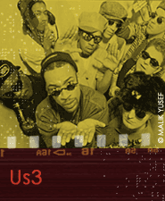

Us3, named after a 1950s Blue Note recording by Horace Parlan, was formed in 1991 in London. This British jazz/rap group started to use samples from classic Blue Note recordings, most notably on their hip-hop single "The Band Played the Boogie" (Ninja Tune). Hearing of Us3's use of their material without permission, Blue Note signed them to a recording contract rather than taking legal action. "The next idea was to put out another single on another independent [label]," said Tukka Yoot, a Jamaican rapper and co-writer for the band. "But when you get an offer from Blue Note, you don't turn it down" (Wentz 1994, 34).
Some of Us3's records became big hits in Los Angeles clubs in late 1994—especially their single "Cantaloop (Flip Fantasia)"—which broke out and charted number nine in Billboard (then the highest-charted hit record in Blue Note history). The single went gold (sold over 500,000 units) in the US and sold nearly a million units overseas.
"The music [of Us3's debut album, Hand on the Torch (1994)] is an aural concoction," wrote Brooke Wentz, "with layers of partying grunts and groans over infectious, rhythmic beats; no standard song forms can be heard, just a groove with rap lyrics, 'lifted' background licks, and 'live' horn melodies noodling in and out" (Wentz 1994, 34).
"Cantaloop (Flip Fantasia)" (1994) contains samples from Herbie Hancock's "Cantaloupe Island" from his album Empyrean Isles (1964) and, in hip-hop and remix versions of "Cantaloop (Flip Fantasia)," there are also samples of announcer Pee Wee Marquette.
Herbie Hancock's "Cantaloupe Island" features a great groove set up by Hancock on piano, Ron Carter on bass, and Tony Williams on drums—that Us3 basically uses whole cloth in "Cantaloop (Flip Fantasia)"—over which Freddie Hubbard improvs on cornet, rather than his usual trumpet.
Listen to Herbie Hancock's " Cantaloupe Island " (1964).
Samples of announcer Pee Wee Marquette's introduction of Art Blakey for his seminal, career-starting live album, A Night at Birdland, Volume 1 (1954) are used on a hip-hop version of "Cantaloop (Flip Fantasia)."
Listen to Pee Wee Marquette 's intro to Art Blakey's A Night at Birdland, Volume 1.
We will return in a later Topics section in this course to discuss in much more detail the relationship of these samples to Us3's "Cantaloop (Flip Fantasia)."
In the meantime, listen to Us3's "Cantaloop (Radio Edit)" (1994).
"Although the album [Hand on the Torch] was conceived as a studio project," said Us3's Ed Jones, "we wanted to work the piece out from the [Herbie Hancock] 'Canaloop' [Island] sample and see what we could do with it. But the project changed slightly since then. We now have a live band, and I see that's the way Us3 is going to develop. The band will take over the role of playing the sample, and now we are putting much more of a jazz element into it. The music will come from the band, not the samples" (Wentz 1994, 35).